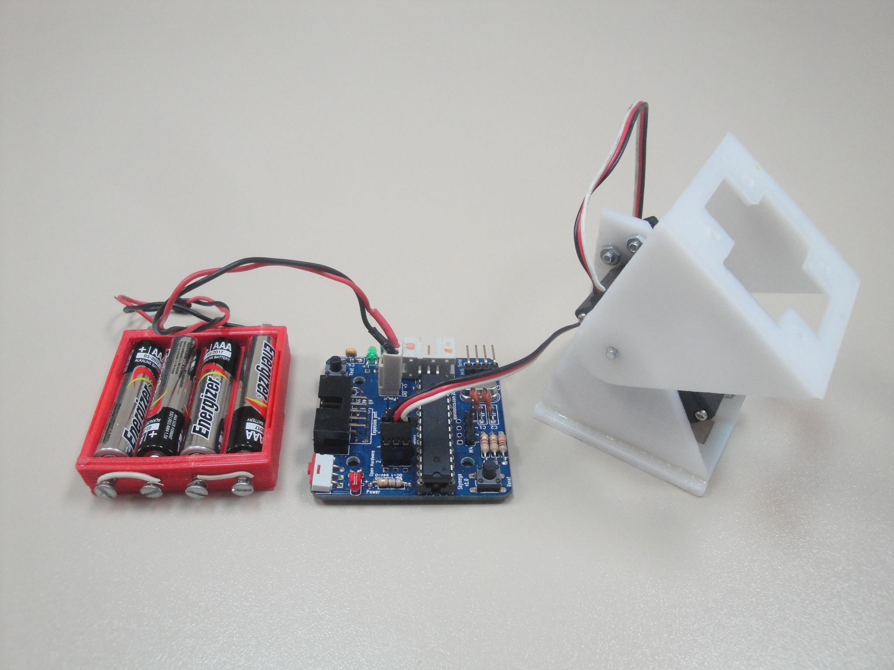
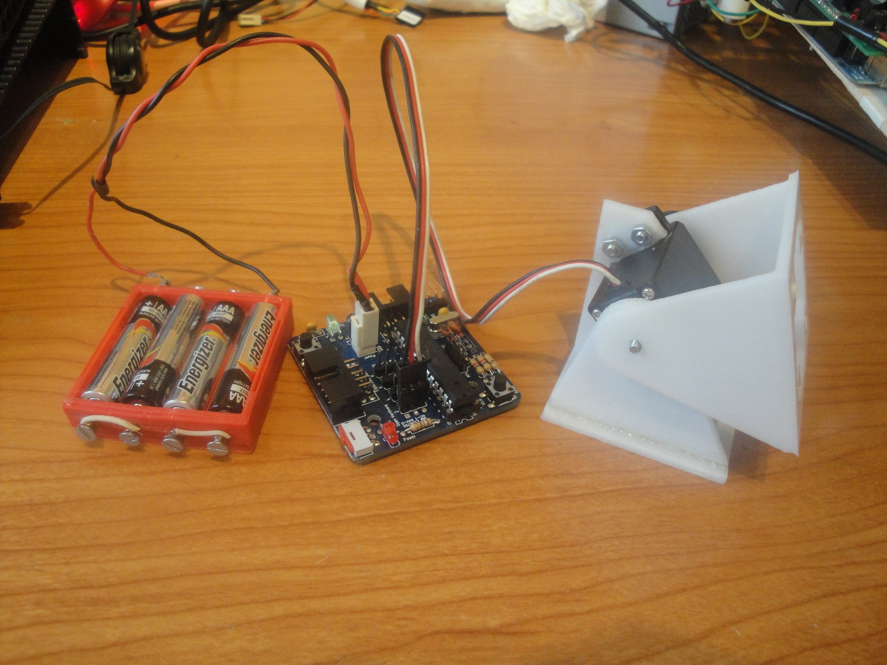
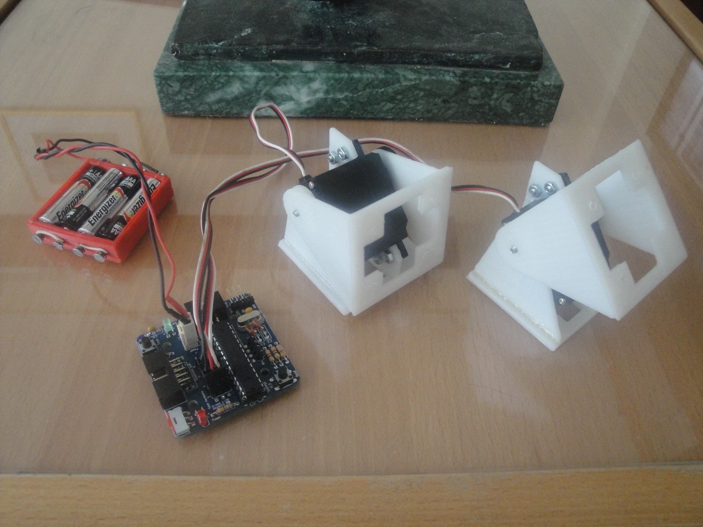
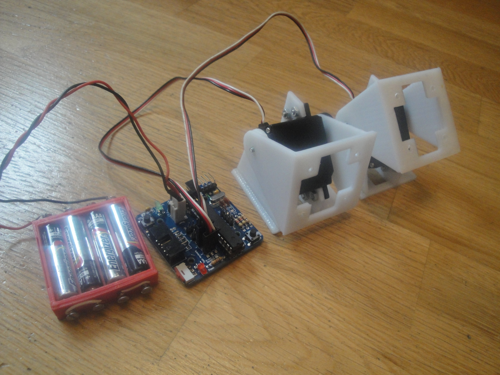
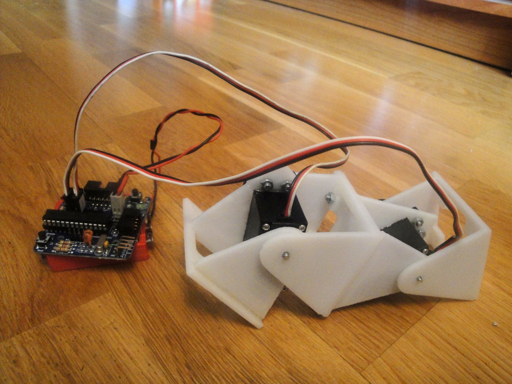

ArduSnake: Arduino Modular Snake Robots Library

Contenido
[ocultar]Introduction
Ardusnake is an Arduino Library for generating easily the locomotion of modular snake robots or other modular robots. It is based on sinusoidal oscillators which drive the servos.
Architecture

The ArduSnake library comprises the following layers:
- Oscillators: This layer is in charge of oscillating the servos sinusoidally. Just with these oscillations the locomotion of worm, snakes and other modular robots can be achieved.
- Worm: It offers an easy API for the locomotion of worm robots (locomotion in 1D) (alpha stage)
- Snake: Locomotion of snake modular robots (in 2D) (Future work, not yet implemented)
- User Application: The user can use the previous layers for the locomotion of the robot.
Tutorial

The first step is to install the ArduSnake library. Please follow these instructions .
Oscillators Layer
Example 1: Hello world
This example just makes a servo oscillate, using the default parameters
- Open the example oscillator_test1 from File/examples/ArduSnake.
- Attach the servo
- If using Arduino connect the servo to pin 8
- If using skymega, connect the servo number 2 (see figure 1)
- Upload the example to the board. The servo will oscillate, as shown in the video
| 300|250</youtube> |  |

The source code of the example is show below. An oscillator is declared, then it is assigned to an output (were the servo is connected). In the main loop the method refresh() is called. It just recalculates the servo position when necessary. The servo will oscillate with the default parameters.
#include <Servo.h> #include <Oscillator.h> #include "skymega.h"
//-- Declare an oscillator Oscillator osc;
void setup() { //-- Attach the oscillator to the servo //-- For arduino, you can use the pin number instead of SERVO2 (for example 8) osc.attach(SERVO2); }
void loop() { osc.refresh(); }
Example 2: Setting the oscillator parameters
In this example the oscillator parameters are set by the user. For generating the locomotion of robots, is quite important to fully understand the 4 parameters that determines the oscillation. These parameters are:
- Amplitude (A): How far the servo moves from the mean angle (in degrees)
- Offset (O): The mean angle (in degrees). The servo will oscillate symmetrically around this angle.
- Period (T): The oscillation period (in ms)
- Initial phase (Ph): It determines in which part of the cycle the servo starts (degrees): in one end, in the other end, in the middle....
The servo position <math>\varphi(t)</math> is calculated by means of this equation:
| <math>\varphi(t) = A\sin\left(\frac{2\pi}{T}t + \phi_0 \right)+O</math> |
In this example, the oscillators parameters are set to: Amplitud: 40, offset: 40, Period: 1 sec, Initial phase: -90. You can see how the servo moves in the following video (compare this oscillation with that of the hello world example)
| 300|250</youtube> |  |

Changing the oscillation parameters is very easy by calling the methods: SetO(), SetA(), SetT() and SetPh()
#include <Servo.h> #include <Oscillator.h> #include "skymega.h"
//-- Declare an oscillator Oscillator osc;
void setup() { //-- Attach the oscillator to the servo //-- For arduino, you can use the pin number instead of SERVO2 (for example 8) osc.attach(SERVO2); //-------- Set the oscillator parameters //-- Offset: 40 deg, Amplitude: 40 deg, Period: 1 sec, Initial phasa: -90 deg osc.SetO(40); osc.SetA(40); osc.SetT(1000); osc.SetPh(DEG2RAD(-90)); }
void loop() { //-- Refresh the oscillator osc.refresh(); }
Example 3: Oscillation of two servos
For achieving the locomotion of modular robot, more than 1 servo are needed. In this example, two servos are oscillating with differnt parameters, as can be seen in the video
| 300|250</youtube> |  |

Now, instead of declaring just one oscillator, as in the previous examples, an array of two is used. The parameter settings is done exactly as in the previous example. First the oscillator 0 is configured and then the oscillator 1. Finally, in the main loop, the two oscillators should be refreshed, so there is a for loop for doing it.
The two oscillators are completely independent. Each one with its own parameters. They are oscillating at different frequencies and with different amplitudes, offsets and initial phasa.
#include <Servo.h> #include <Oscillator.h> #include "skymega.h"
//-- Declare two oscillators Oscillator osc[2];
void setup() { //-- Attach the oscillators to the two servos //-- If using arduino, you can write the pin numbers (8 and 9 for example) osc[0].attach(SERVO2); osc[1].attach(SERVO4);
//-- Configure the oscillators //-- Oscillator 0 osc[0].SetPh(DEG2RAD(0)); osc[0].SetO(0); osc[0].SetA(45); osc[0].SetT(2000);
//-- Oscillator 1 osc[1].SetPh(DEG2RAD(-90)); osc[1].SetO(40); osc[1].SetA(40); osc[1].SetT(4000); }
void loop() { //-- Refresh all the oscillators for (int i=0; i<2; i++) osc[i].refresh(); }
Example 4: A mini-wave
This is an example of how to generate a mini-wave in two servos. The two modules oscillate with the same parameters (it is the same oscillation) but with a phase lag, so that one servo is delayed with respect the other. What happens is that they create a mini-wave. If more servos are used, this waves is bigger and can be seen much better. The locomotion of snake modular robots is based on this principle.
| 300|250</youtube> |  |

For testing different waves, the user only has to change the global parameters (common to the 2 oscillators). The rest of the code do not have to be changed.
#include <Servo.h> #include <Oscillator.h> #include "skymega.h"
Oscillator osc[2];
//-- Global parameters for the oscillators //-- Change this parameters for generating different mini-waves const int A=40; const int O=40; const int T=2000; const double phase_diff = DEG2RAD(-45);
void setup() { //-- Attach the oscillators to the two servos //-- SERVO 2 and SERVO 4 for the skymega //-- If using arduino, you can use the pin numbers (8 and 9 for example) osc[0].attach(SERVO2); osc[1].attach(SERVO4);
//-- Configure the oscillators with the same parameters for (int i=0; i<2; i++) { osc[i].SetO(O); osc[i].SetA(A); osc[i].SetT(T); } //-- Set the phase difference osc[0].SetPh(0); osc[1].SetPh(phase_diff); }
void loop() { //-- Refresh the oscillators for (int i=0; i<2; i++) osc[i].refresh(); }
Example 5: Locomotion of a 2-module worm with the oscillator layer
This is an example of how to generate the locomotion of a modular worm robot using 2 oscillators. A mini-wave is created on the robot, as shown in the previous examle (test 4). A phase difference of 130 degrees between the two modules makes the robot move forward.
This example shows HOW EASY is to move the worms modular robots :-)
| 300|250</youtube> |  |

This example is exactly the same than the test4, but with different values for the oscillators. A different mini-wave is generated.
#include <Servo.h> #include <Oscillator.h> #include "skymega.h"
Oscillator osc[2];
//-- Global parameters for the oscillators //-- The have the same parameters, but a phase different of 130 degrees. It makes de robot move forward const int A=40; const int O=0; const int T=1600; const double phase_diff = DEG2RAD(130);
...
//The rest of the code is exactly the same than the test4 example
Download
| ArduSnake-001.zip | ArduSnake sources. Version 001. For Arduino 22 |
Installation
The current version is valid for Arduino 1.0.3 or later.
- Download the latest version of the library from the github: [1]
- Copy the ArduSnake and skymega folders under the sketchbook/libraries arduino folder (In linux, it is in /home/username/sketchbook/libraries). It does not matters if you do not have a skymega board, copy the folder skymega anyway.
- Launch the Arduino IDE
- The menu Ardusnake containing some example should be accesible now from the File/Examples menu
Changelog
Ardusnake 001:
- Initial version
- The oscillator layer is working
- Some examples on how to use the oscillator layer written
- The worm layer is still in alpha stage (Do not use it yet)
- The snake layer has no been started
Authors
License
| This library is under the GPL v3.0 license |

Git repository
More information
- Modular Robotics and Locomotion: Application to Limbless robots. PhD Thesis. Juan Gonzalez-Gomez. Nov-2008. Universidad Autonoma de Madrid
- ArduSnake, in thingiverse
- Skymega board:
- Skymega board, in thingiverse
- SkyMega, official page (in Spanish)
- Repy1 modules: 3D printable modules
- Repy1 v1.1 modules, in thingiverse
- Módulos REPY-1. Official page (in Spanish)
- Micro-osciladores (Spanish). Previous versions. Implementation for the PIC microcontrollers
News
- 14/Abril/2012: Version 001 released. Examples of the oscillator layer added
- 15/Feb/2012: This page is created